横盘后，某天竞价跳着高开急拉一波，第二天开盘下杀一波又拉起来，并没有走坏，并横盘缩量调整洗盘，应该会有一波趋势，待验证。。。
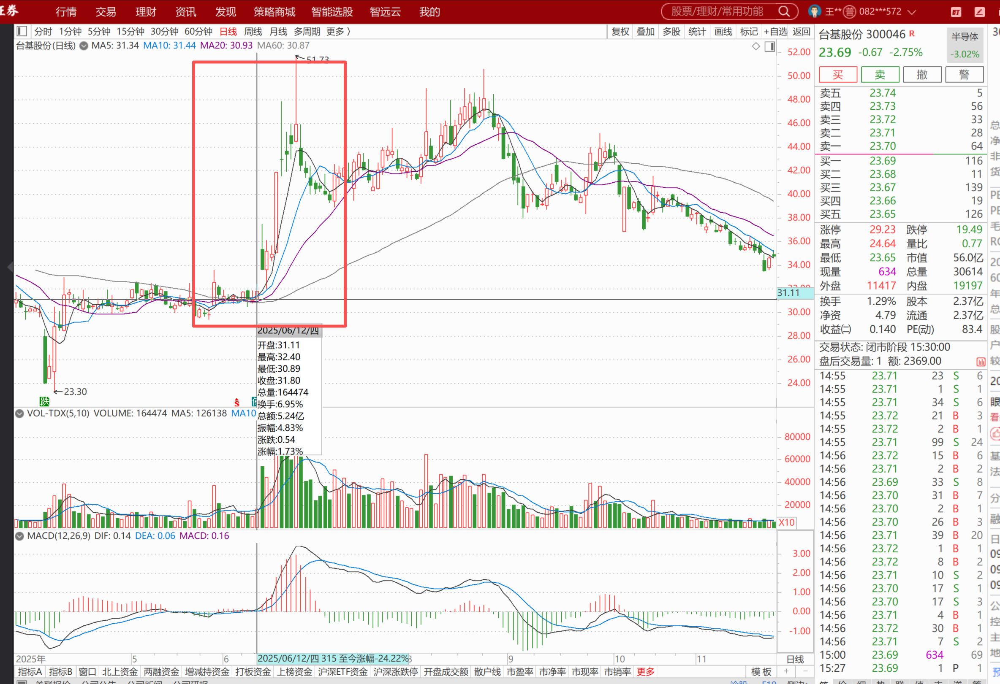
板块节奏点
异动和启动
板块内有大涨的个股，有涨停的，但数量不多少于五只一般，板块指数一般呈现小阳线。或者一个震荡区间没反复的活跃，连续上影线，但是没有大涨过。
对于趋势版块，主要就是板块开始止跌，出现了1-2只新高个股。如果新高个股继续新高大涨，板块可能继续转强爆发。这个阶段适合打龙头的换手板或者半路，博弈加速。
注意这个的阶段的要求一定是板块或者个股有一定的常规低位。
爆发
板块连续异动后，可能有一次大涨，特点是多加涨停或者有明显的大票涨停。
共振：如果配合指数的第一根或者第二根大阳线，爆发的持续性会加强，也就是板块和指数的反弹共振。
日内爆发板块三种常见定方向方法：
- 一字板定方向
- 弱转强定方向
- 大票加速定方向
（1）当日换手弱转强
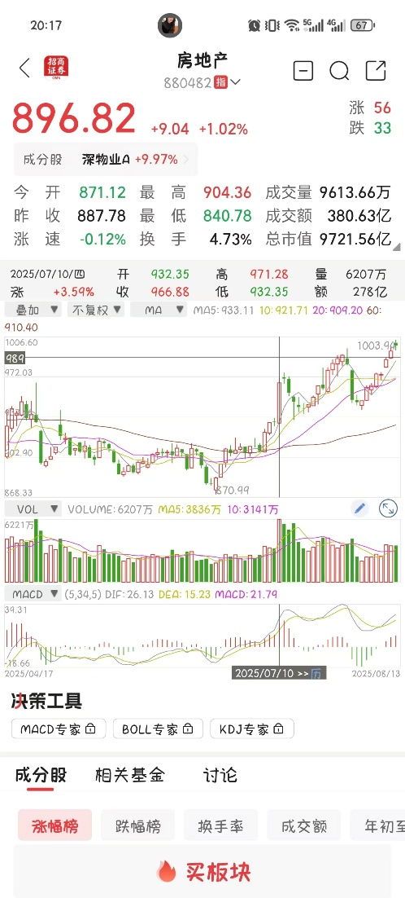
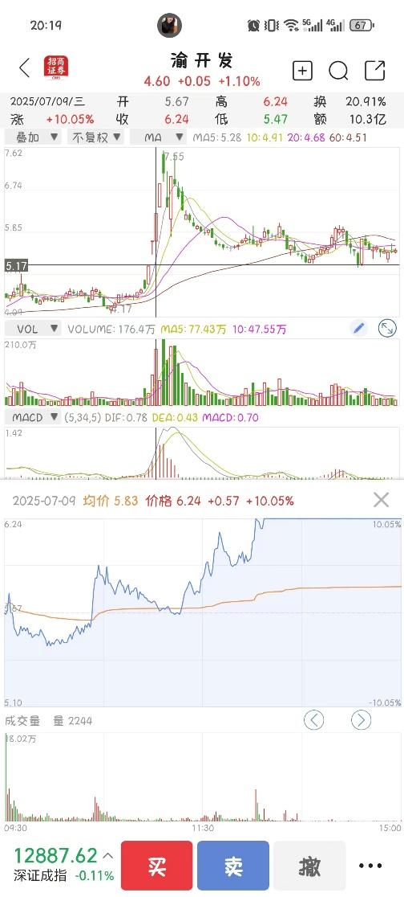
（2）当日炸板，第二天高开弱转强反包
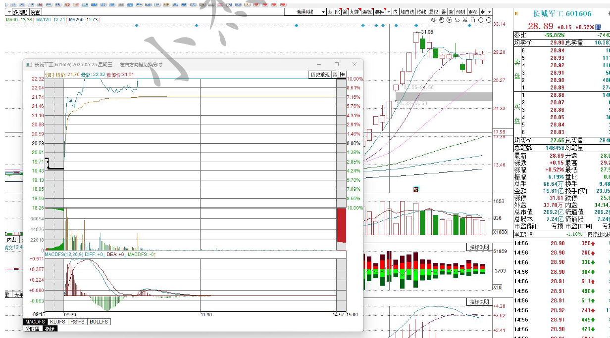
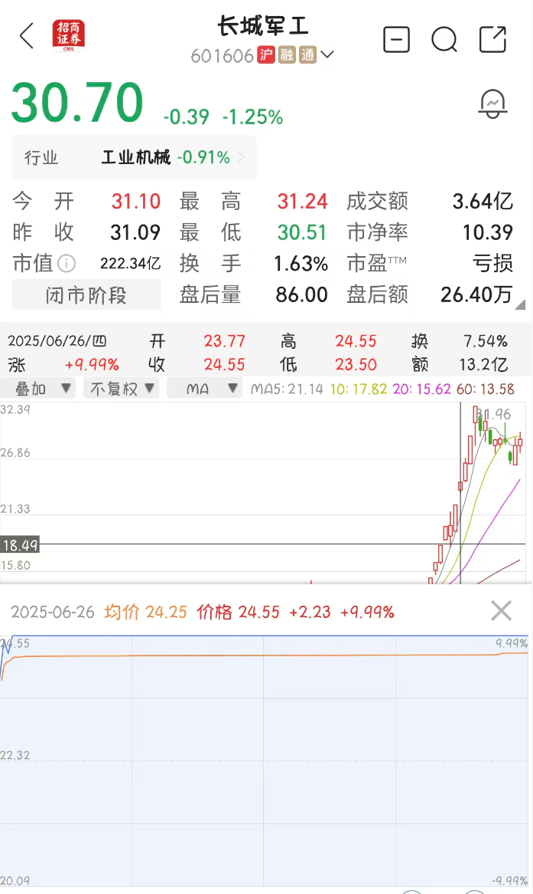
（3）一字板定方向：相当于弱转强pro版本，只不过更强势
（4）大票定方向：开盘高开高走，日内板块爆发。不同的板块核心个股不一样，有的是连板定方向，有的是大票定方向。
这一阶段做的主要是龙头的弱转强打板，或者首板的套利，或者板块内涨幅较小的个股等补涨。尽量不要去追日内大涨、偏离均线较远的后排个股。
这一阶段，龙头弱转强，但是板块如果没爆发，个股可能炸板。这种买法，在指数反弹的第一个或者第二个阳线会更好，后面要小心。
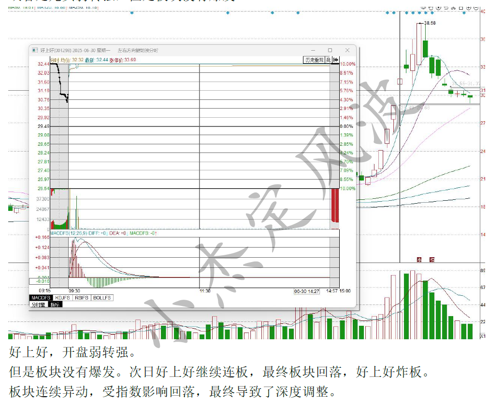
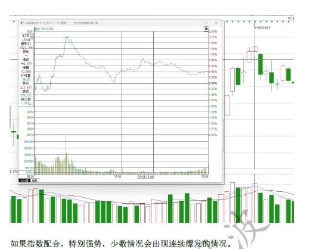
分歧
主要就是板块指数高位震荡或者冲高回落。如果板块爆发后，指数放量大跌甚至板块跌停，这种分歧较大，要回避，第二天可能继续补跌。
如果要正常震荡，可以博弈回流，主要就是找强辨识度的个股：最强的核心连板票。找高度最高，换手最好的。如果换手强了，一字板可能走弱。如果一字板强了，换手反而可以套利。
低吸可以保下限，分歧日买，次日如果有行情，就大肉；没有行情，小亏小赚也算是活着出来。但是想要有行情就要市场的配合。
如果分歧日冲高卖出套利，后面回落了，但是尾盘又拉升更高，这种不要担心卖飞，每次分歧日冲高的场景卖掉，然后如果选择的是核心个股等回落了再低吸回来，博弈明天的回流，相当于做了个t。每次分歧博弈回流都可以看作是单独额独立的战法体系。
核心中军低吸
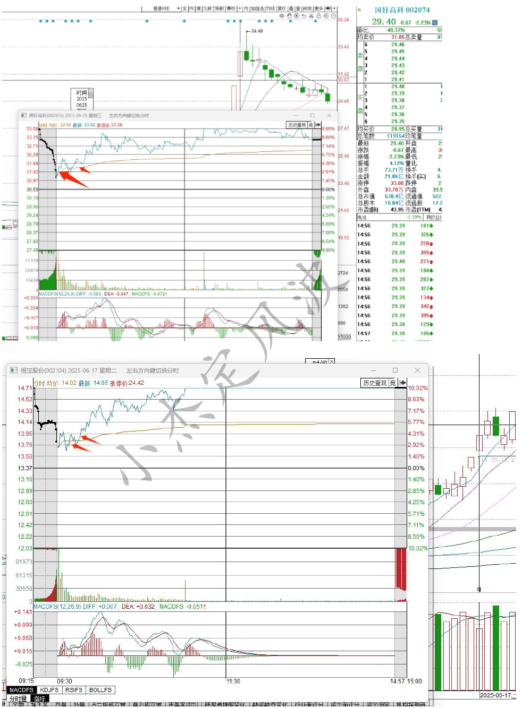
分歧日分分时抗跌的：
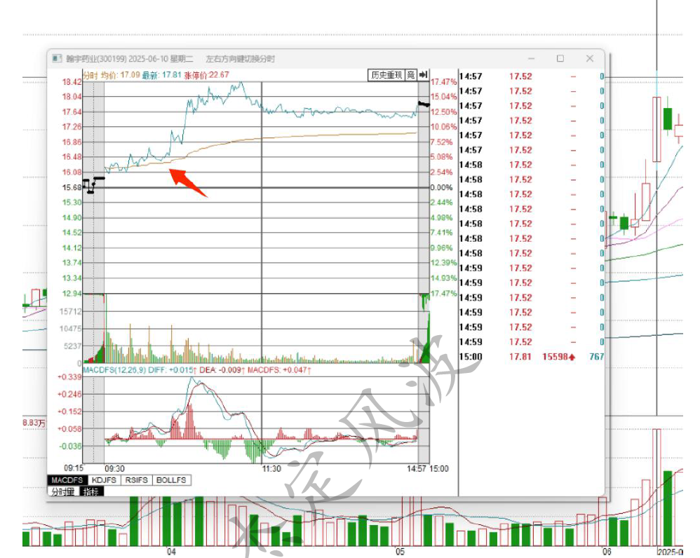
分歧日创业板活口和抗跌分时：（难点在于如果指数持续回调，逆指数的分时也补跌）
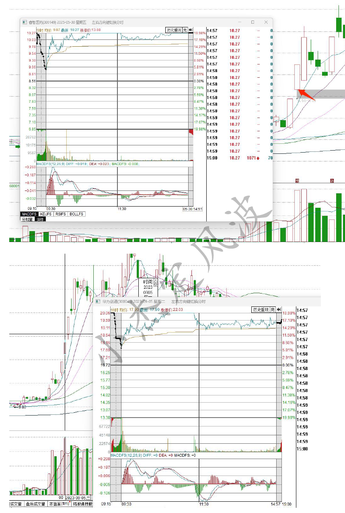
回踩五日线：
对大部分人来说，找中军或者回踩五日线，形态股性好的更稳妥，确定性较高。高位连板适合高风偏和高承受力的。
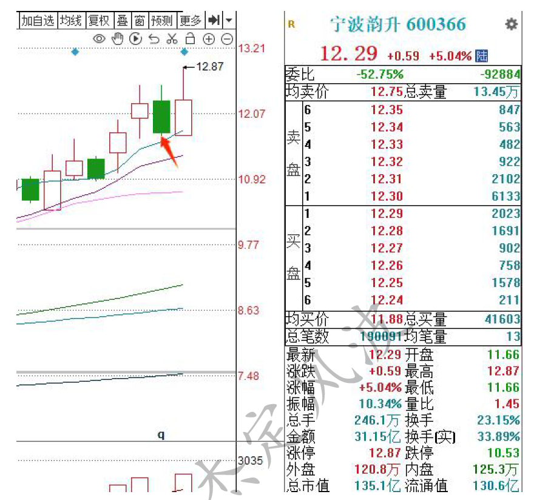
回流
分歧后的回流，强回流会再次爆发，弱回流会冲高回落和炸板。原则上回流日不开新仓，除非指数强。
题材属性好，大题材更容易二次爆发，对于大部分后排个股，如果回流不能新高，都是卖点！回流的比较强势，就按照二次爆发处理，后面还可以继续买分歧。龙头个股的二次分歧低吸一般可以全身而退。
小周期冰点，去买阶段涨幅（10日涨幅或者20日涨幅最高的趋势个股，等回踩到5日10日线去低吸，但是快进快出！！！，否则可能大亏）
震荡或超跌
弱回流后，调整幅度变大，买大阴线调整后。一般第一根大阴线后不买，买第一根后面的第二根后或者三根后或者十字星。配合龙头股走势，如果龙头股出现补跌，这个买点确定性会更高：舒泰神前期龙头
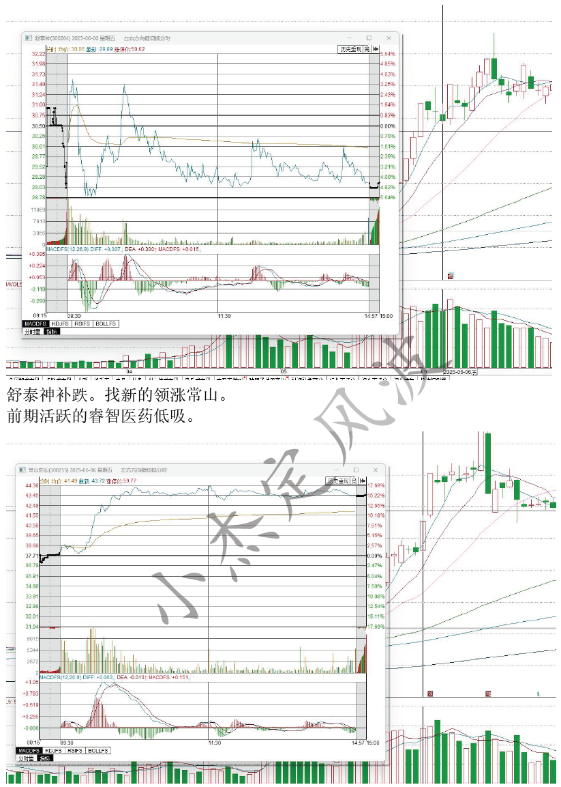
调整时间变长的情况下，可能要横盘4~5天后低吸，博弈轮动或者二波。在突破后的第一根阳线做追涨，也就是6这个位置。
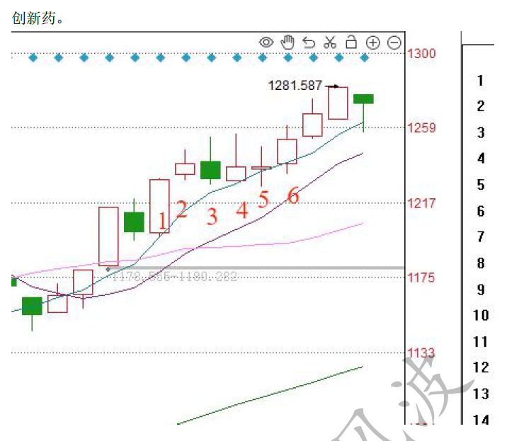
难点在于：如果指数次日下跌，可能板块即使走出二波图形也容易补跌。所以同时还要观察指数的赚钱效应，指数有风险后一定是试错仓位轻仓或放弃。如果是指数补跌后或者指数反弹后板块出现此种形态，则该第一根阳线更容易持续。
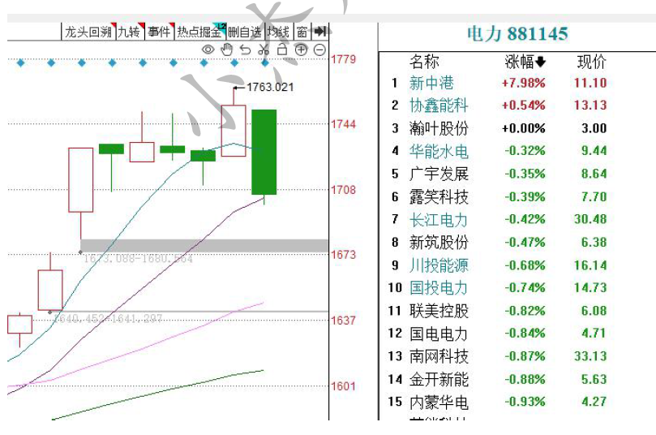
相对来讲，如果之前低吸有底仓成本更低，或者是买入后，次日开盘走弱，要卖的果断些敏感一些。
打板战法
为什么打板
转折点打板是分仓卡节点，在情绪可能发生转折时候出现的涨停、连板，一般溢价都很高，也会有高性价比高赚钱效应的个股。比如9月5日、9月6日的连板。这点有些切合金田哥的理念，他喜欢打板和接力，是因为这是最容易参与到主升浪的方式。本质上也是为了性价比。
分仓做每一个方向率先出现的二板，主要是为了板块给的溢价，能够做到爆发的方向，之后去弱留强，参与主升浪。这个和卡节点很像，但有时候卡节点可能要做高位股。
这两种分仓模式，本质上还是分别押注，然后靠盈利的抵消亏损的，这种情况下，如果好的没做到，坏的可以放弃。因为如果没有一起做，第一选择没做到，第二选择亏钱的概率就会非常大。做强势股模式，很怕退而求其次。
对于5、6板的高位接力，如果不看好后面有几个板，那就不要去做。怎么衡量这个性价比，其实就是看情绪周期、指数形态、板块强度。
- 寻找共性、重复交易。
记住自己赚钱的感觉，然后重复下去，形成正反馈。想清楚自己为什么打板，是为了隔日的溢价，还是为了博弈板块爆发，个股主升。
- 成功率和性价比，靠哪个盈利。
不要看着板就打，为了打板而打板，是打板里的大忌。
机构板
一般来讲，机构席位上了龙虎榜，第二天都会冲高 。
机构偏好基本面好的，有业绩有景气度，有政策预期的行业大票，可以通过十大流通股东数量、机构调研频率、研报数量来看一个个股是否是机构偏好；
机构涨停板特点：
- 在分时走势上面，体现在个股不会直接一次性干到板上，分时不会像游资票那么陡峭，笔直拉升，而是涨一点、跌一点，缓慢拉升，涨停后不追求封单，打开也正常；
- 涨停时间：除了重大利好，机构票很少有早盘涨停的。下午和尾盘涨停最为常见。早盘涨停后，盘中很容易打开；
- 日线结构：机构票很少有连续三板以上的。往往都是大涨后，等调整，然后再上涨（成本会更低，拉起来后自有资金接力）。机构的买入往往是具有持续性的；
- 对机构票，可以当成一个选股的参考，然后结合指数趋势、个股技术、板块进行操作，做波段。
机构票打板：
把机构票底部涨停作为一种信号，当成一个选股的参考，然后结合指数趋、个股技术、板块进行操作，做波段。
游资板
游资板是游资推动的击鼓传花游戏。持续拉升过程中，必须有足够的换手，不断抬高市场平均成本，大家成本才接近，才能继续下去。如果持续缩量，底部锁仓的人过多会形成潜在抛压，必须通过放量来将筹码重新洗牌一下，游戏才能继续下去。
妖股的交易过程中，很少从头拿到尾，捕捉到其中一段就很知足了。
影响市场合力因素
- 市场整体量能：弱势市场可能量能不足，接盘的人少导致上不去；
- 市场指数与情绪周期：大规模资金更关注宏观经济和指数形态，求稳建仓；
- 短线活跃资金量（涨停股总额）：把每天涨停个股的成交额加起来基本就是还在投入到交易中的短线资金了。如果赚钱效应好，这个资金规模变大，反之缩小。如果短线要有持续性，涨停股总额一般要在500、600亿以上。中通客车、大港股份的时候都是这样，最少一般是500多亿，高了可以超过800，甚至1000。而9月份，除了9月7日相对高一点，接近500亿后，其他大部分的交易日涨停股总金额都在300亿以下。
这也侧面说明一个道理，市场不怕没题材，就怕题材多：
如果只有200亿成交额，主攻一个方向，那么一个方向可以炒作一段时间。如果200亿成交额攻击多个方向，那基本大家一起玩完。
板块涨停股成交额作为是否能够板块能否回流的一个标准：
国光电器、歌尔股份之所以敢于重仓博弈回流，就是因为消费电子板块的涨停股成交额足够大，资金足够活跃。但是后来的钠离子、消费酒，虽然涨停多，但成交额不大，并不完全满足回流的标准。在满足条件的情况下，成功率高，可以多买点。不满足条件，可能成，但也可能失败，仓位就要低点，成了就拿，错了就止损。
- 赚钱效应：观察大盘涨跌数
- 监管：监管不是市场差的主因，但是弱势环境时，监管会进一步恶化市场环境。
与机构票区别：
游资票以小票、概念炒作为主，会关注业绩，但没有业绩的垃圾股也会炒作。分时拉升比较犀利，一般都是1、2笔拉升，就到了涨停，很陡峭，不磨蹭。要的就是这个封板的气势和力度。
妖股补涨法
思路：当市场较差，或者板块连续调整逐渐横盘后，有个股先于指数、先于板块指数企稳，并且涨幅很大，翻倍，甚至几倍的时候，那么这个板块就会有补涨股。特别是当这个板块个股股性好，板块经常出涨停股时，游资非常可能会选择做连板股、妖股来做机构股的补涨。小票会以更暴力的方式补涨趋势股。趋势走了一倍，7个连板也是一倍。
注意事项：板块股性好，科技、政策属性，游资认可，容易出连板妖股、翻倍妖股；如果板块股性差，那么出2-3板的个股会容易些。
科技板块的常见炒作路径：最开始炒概念，后来炒商用，炒落地，最后留下真正有业绩的个股持续上涨。一只机构股翻倍了，背后一定有自身逻辑在，一种可能是个股拐点，或者业务变更，另一种就是行业的拐点。
烂板次日连板转强可以理解为超预期！！！可以试错。
支撑位大全
理论
前提
- 支撑位会跌破，跌破注意止损
- 很难有标准的支撑回踩：强势市场在支撑上方就继续涨；弱势市场往往跌破在支撑位附近反复震荡，测试支撑位有效性。
- 支撑位和压力位是相互转化的。
- 支撑位的重叠越高越好，不同时间的支撑位叠加起来更有效。
- 短期内，支撑位和压力位都是第一次最有效：支撑位=一扇锁着的门，第一次最牢，反复开关锁次数多了就容易一推就开；压力位=一堵堵着的墙，第一次撞墙最结实，撞的多了就松了。这也是多次突破关键价位的买点逻辑，多次突破，比第一次更容易成功。
- 放量突破或者跌破支撑位更有效。
- 个股越大越有地位，和市场强关联，则各种方法找到的支压力位就越管用，因为参与者多，统计规律越明显。越是庄股，成交金额越小，随机性越强。
有效突破和跌破的确认
通过跌破突破后的涨幅和时间来确认：
以趋势交易为例，突破后，继续上涨3-5个点，2-3个交易日不跌破，为有效突破并转为支撑；跌破后2-3个交易日不收回为有效跌破。
如何应用支撑
支撑位附近低吸，后面止跌反馈好，形成二次放量或者反拉到均线上根据风偏加仓。如果低吸了后跌破了支撑位，说明最初判断不对，择机减仓止损。
假突破和假跌破
价格快速跌破一个公认的强支撑吸引空头入场或者触发多头止损，但随后价格迅速反转拉回支撑之上，这通常意味着主力在洗盘，随后往往有大涨。这种跌破被称为“毛刺”或“空头陷阱”。
遇到这种现象，一个就是用时间来验证支撑有效性，是否快速收回，比如跌破多久不收回就按照真跌破来处理。
短线，看15-30分钟，日线看2-3天等，按照一致性处理。跌破时不论真假，都按照真的处理。
支撑位分类
水平支撑位
价格在历史上多次触及但是未能跌破的特定水平价位。
原理：价格跌到这个位置时，买家积极进场（卖家惜售），形成强大买盘力量。
趋势线支撑
上升趋势中，连接一系列逐步抬高的低点，形成一根向上倾斜的直线。
原理：只要价格维持在趋势线上方，上升趋势就认为是健康的。
关键点：连接至少两个低点才能画线，第三个点触碰该直线并反弹则确认其有效性。
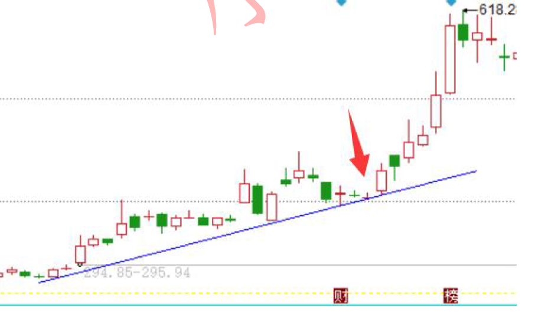
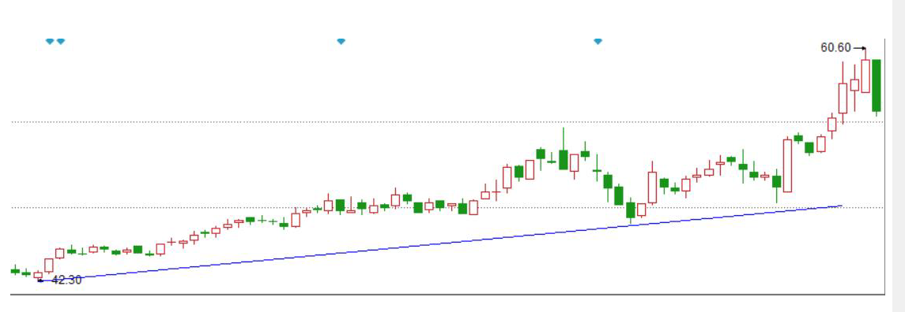
移动平均线支撑
短期：5日，10日；
中期：20，30，60（季线），120（半年线）
长期：250（年线）
案例：
- 盛新锂能，锂电池分支龙头，突破新高后，第一次回踩；
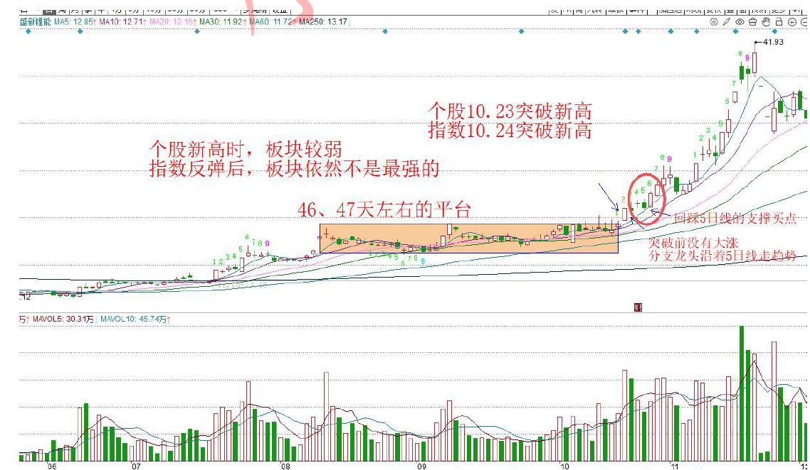
- 半导体设备etf10日线附近低吸；
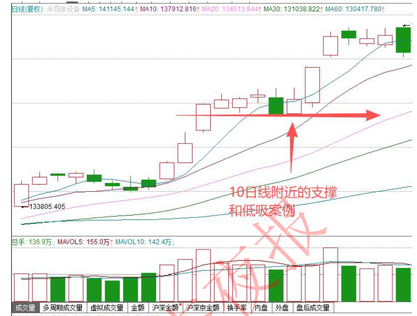
- 北方华创，调整至中期均线60日线，迎来反弹
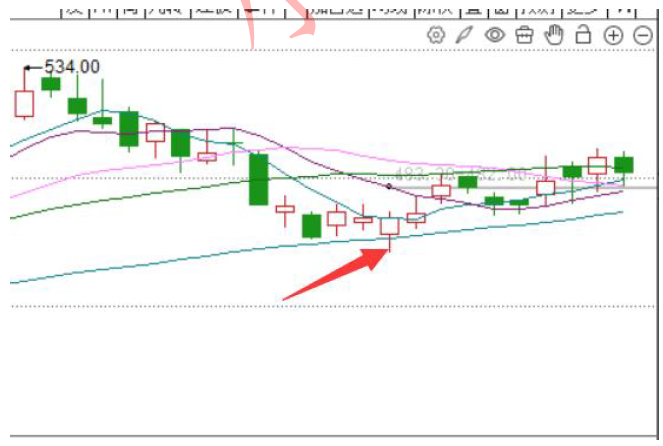
- 阳光电源突破年线后，一波上涨后，多次回踩年线后展开反弹。
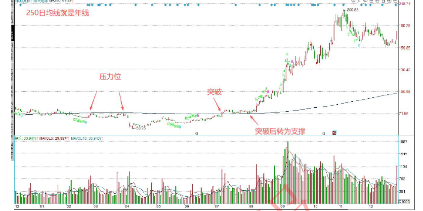
标志性K线
标志性K线的要求和特点：
- 成交量明显放大：有增量资金入场；波动较大，发生重要价格变化（5%以上或者涨停或者重要的下影线）；突破了前期箱体、趋势线或者重要均线。
以大阳线为例：
- 收盘价支撑：第二天价格回调，但始终在昨天大阳线的收盘价上方运行，这是极强的表现，通常意味着日内调整结束，可以选择机会低吸
- 开盘价支撑：如果主力要做多，通常不会让价格跌破开盘价，因为那意味着翻天买入的人都处于被套状态。
- 均价支撑：分时均价，指市场当天所有参与者平均持仓成本。只要在这个价格之上，意味着大多数人都是盈利的，市场情绪稳定；一旦跌破，意味着平均持仓的人开始亏钱，抛压可能涌出。
实战意义：两种均价线最重要
- 昨日的均价线
- 最近放量k线的均价线
（以正丹为例，5月15日是辨识度关键日期的20cm涨停大阳线当天的均价线最后收在24.31，16日17日没有回踩15日那天的均价线，20日的这天就是第一次回踩关键大阳K那天的均价线同时满足：
- 大阳k的均价线支撑有效
- 第一次回踩（短线第一次回踩有效)
21日反弹13.82%，波段上涨30多个点。
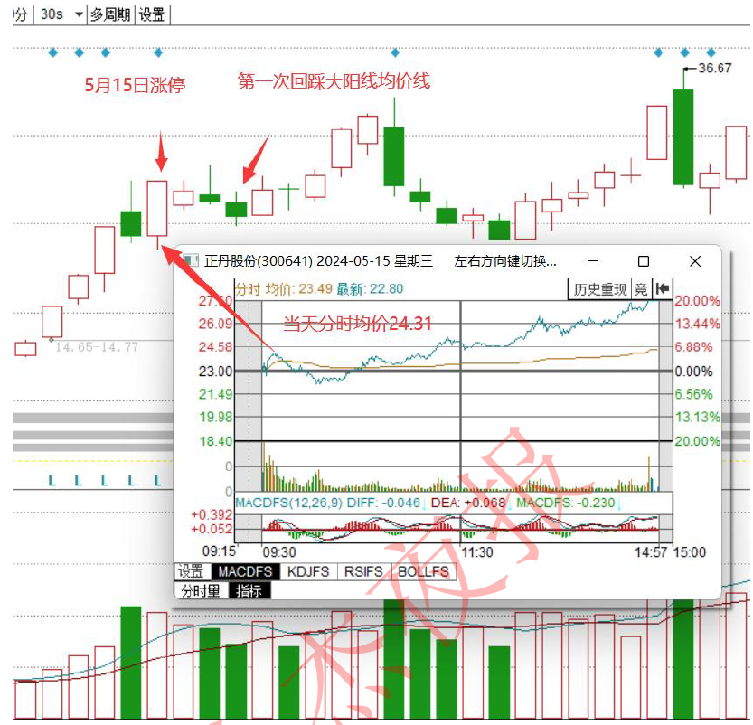
- 下影线支撑：原理 本来就是当天价格曾经跌下去，但被强大的买盘拉了回来，这个下影线的低点就是当天多头反击的开始。可以理解为主力的防守底线，一般主力不会轻易允许价格跌破这个位置，否则可能打击市场信心，引发抛压。
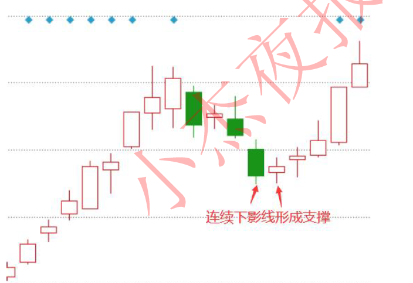
实战特殊用法：如果后续几天价格连续缩量回调，正好打在下影线区域（不破低点），通常是极佳的买点。
- 形态支撑：
- 头肩底：颈线突破后，回踩颈线时颈线形成支撑。
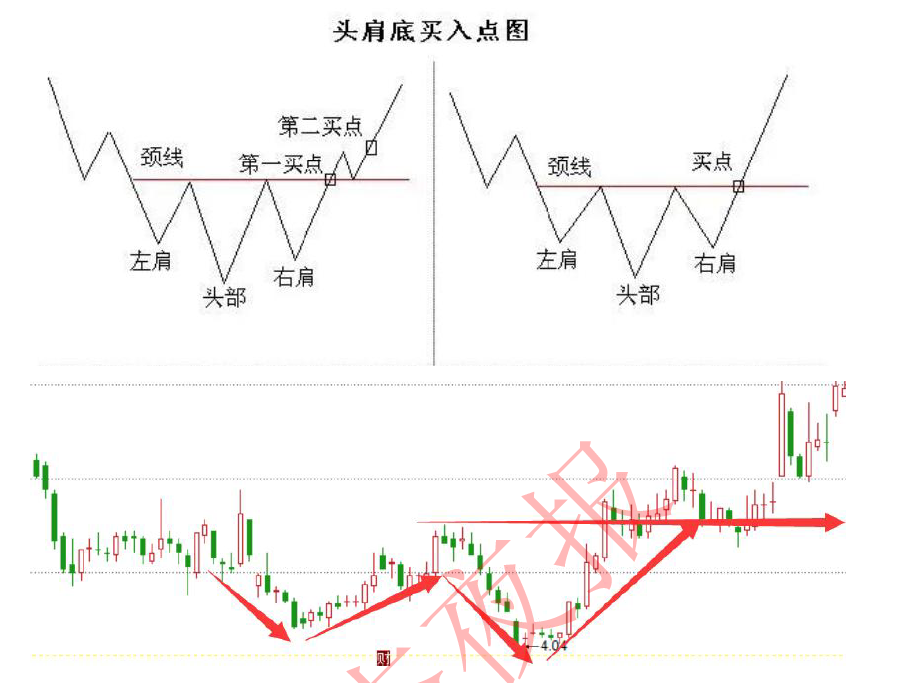
- W底：上方两个高点捅破后回调不破形成水平支撑，下方两个低点不破形成水平支撑，买点类似于双肩。
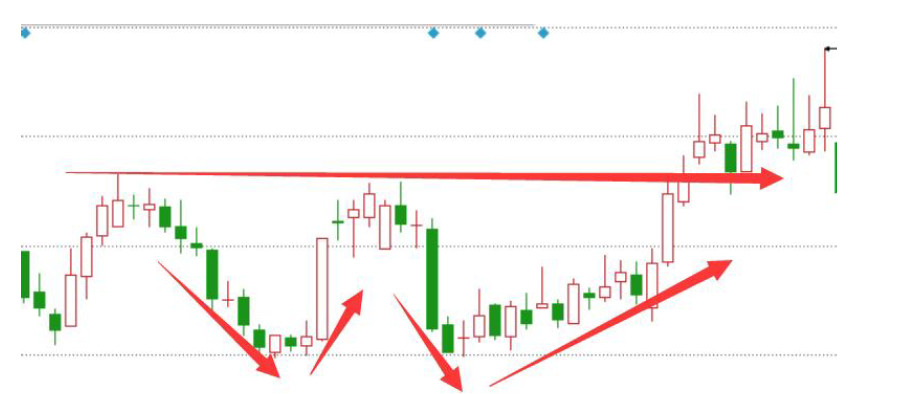
- 缺口支撑：如果价格跳空上涨（有缺口），之后回落至缺口上沿或缺口中间区域时，通常会获得支撑，因为缺口代表强烈的买盘意愿。
注意：跳空缺口的上下沿都有可能是支撑位或者压力位，越靠近边缘力度越强。
20cm套利
盯盘
日内最强板块的打板或者半路：找最强板块的20cm首板或者二板打板。最重要的是指数强，板块强套利，成功率取决于指数和板块强度；
板块大涨次日是分化预期，但是在指数强的情况下板块可能次日继续走强从而套利股可能也会走强，如果指数弱就要记住次日套利股冲高跑路。
次日板块分化表现：板块分时冲高回落或者无法创新高震荡或者直接走弱，此时是卖点。
前提
爆发板块足够强！板块明显放量！！各股是前一天最强的20cm！！！
爆发次日，大部分时候板块分化即个股冲高回落（只有少数个股可以走出分歧二板），再次日可能有反包或者直接走弱，找爆发日最强的个股进行分时分批低吸博弈次日反包。（可以观察该个股分歧日是直接下杀还是小幅回落并有承接，后者低吸更好）
20cm分歧二板
板块爆发次日分歧，个股还能二板封死，再次日有回流和修复预期，容易低开高走快速拉升。
还有可能二板炸板，但是如果有承接（在分时均线上方），次日可能也有回流拉升。
二次分时放量买点
定义
- 二次放量：股价盘中出现两次放量，第一次早盘的试探或者洗盘，第二次再次放量说明有新资金进场。最好是二次放量时的柱状图面积和大于第一次时候的面积和。有时候一分钟的量能大但是阶段的面积小。
- 新高：指第二次放量后，分时股价能够日内新高，涨幅和速度通常超过第一次，可能是真的启动。
- 半路：针对于水下急跌低吸，和高位涨停打板买入，半路买点处于拉升途中。
- 买点：二次放量瞬时介入或者二次放量后再次回落回踩均线附近、放量的价位附近买入。
- 买点逻辑：早盘的放量靠化一些获利盘兑现，兑现较凶，第二次再次介入抛压相对较小，介入时成功率高。
如何提高成功率
- 择时：小周期反弹第一二天，情绪好更容易成功。
- 方向：热点板块，根据板块节奏，买板块由弱转强的那几个阶段，个股更容易获得加成。
- 形态和股性：k线形态，股性上历史上有过连板股辨识度更好
如何提高日内大涨概率
容易大涨的位置和形态
- 平台突破：股价在相对低位长期缩量整理形成的平台，二次放量当天的目的是突破这个平台。
- 关键阻力位突破：面临前期高点、重要均线（如年线）、均线粘合处、跳空缺口等压力，二次放量是带量突破的确认信号。
- 阳包阴，多方炮形态：第一天放量上涨，第二天回调洗盘，第三天（当天）再次放量上涨，形成两阳夹一阴走势。
- N字形态、N字板：尤其是和龙头股同期涨停过的个股做补涨。前一天或者前几天有过涨停，随后1-几天缩量回调至关键支撑位（如五日线），当天二次放量启动。
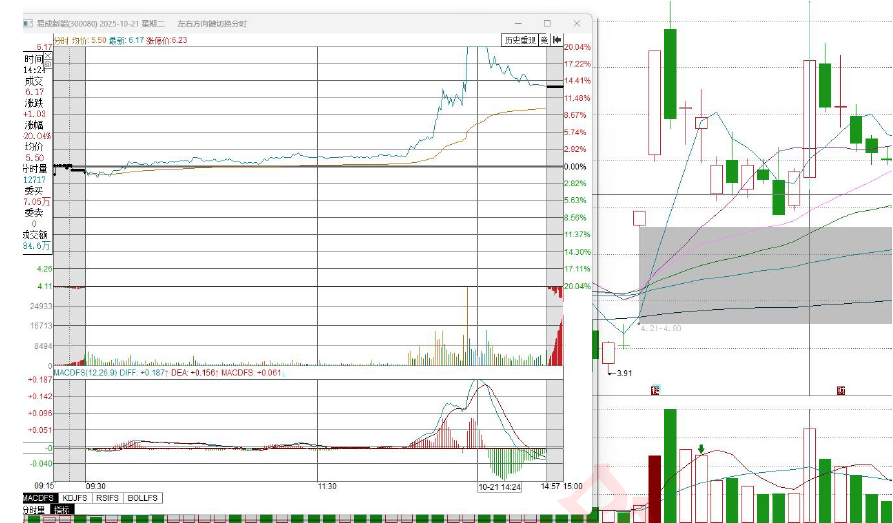
- 均线多头排列，k线走加速趋势，连续小阳大阳线。
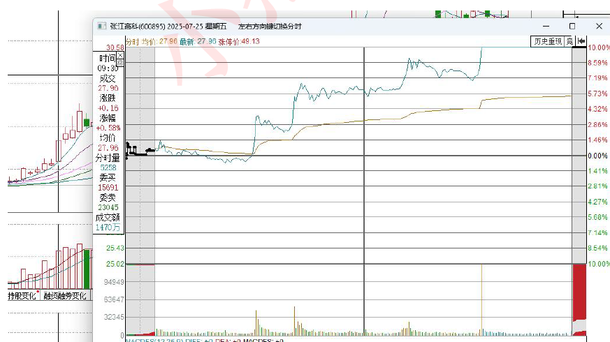
- 均线多头排列，k线回踩企稳：止跌十字星+第一根阳线止跌（+第二根放量阳线涨停）
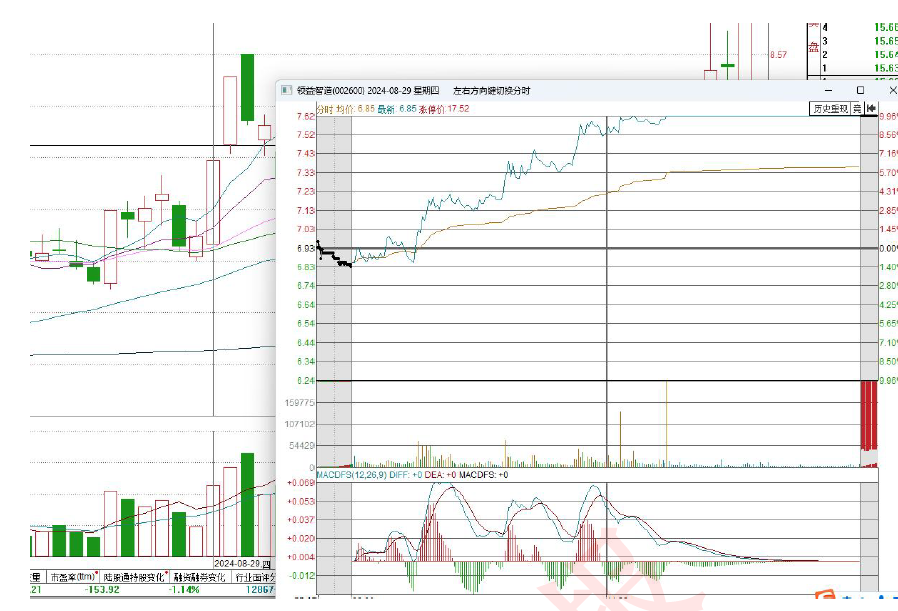
总结
高概率半路买点 = 大盘环境+板块+个股辨识度+形态+分时。
任何理念和技巧，讲了是一回事。
大家有没有看是一层。
有没有认真看、认真理解是一层。
理解后有没有动手去实践，有没有自己去总结，是另一层。
熟不熟练，又是一层。
看了，懂了，做了，做好，熟练的得做好，这一步都是一个新的境界。
所以很多时候，为什么有人赚钱，有人亏钱。
其实也就在这一次次的差别上。
三大卖点
重要原则：位置越高，仓位越重，买点越敏感！！！！！！！！
第一类：围绕五日线
不及预期，不能沿着五日线快速拉升。
- 分时冲高回落，跌破分时均价
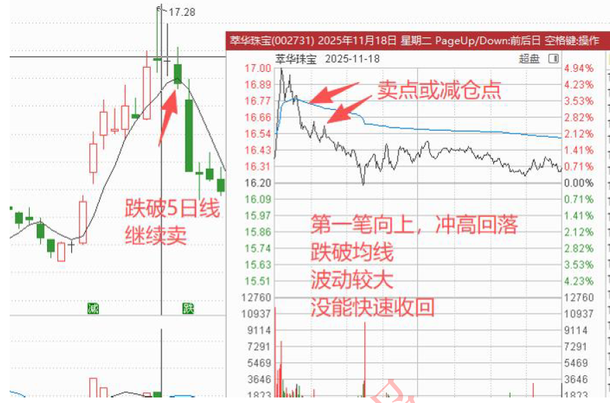
- 日线距离5日线较远，分时震荡后，持续下跌。
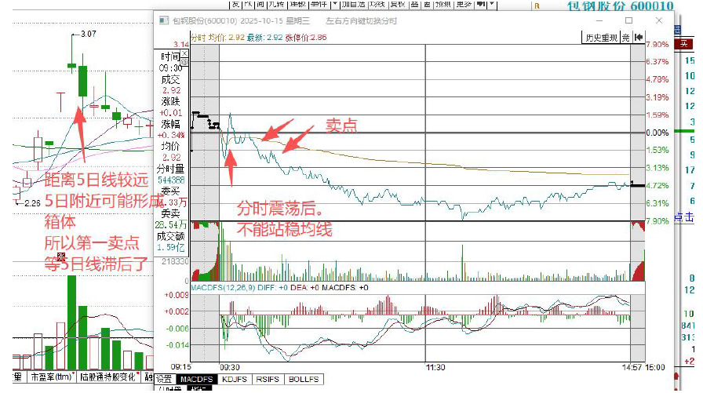
- 震荡后跌破五日线。分时高开低走，第一波向下，没能快速止跌。
- 个股高开低走，反弹站不上均线。
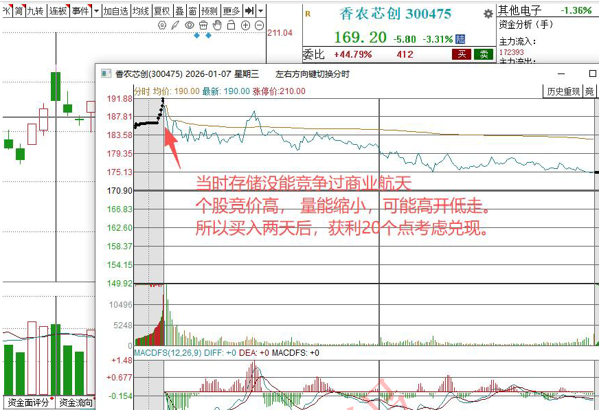
- 日线良好，突发利空。
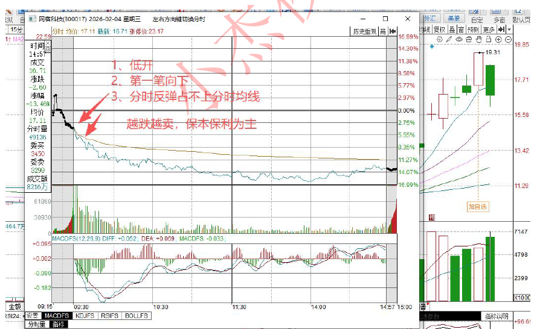
- 买入后快速获利，波动小。
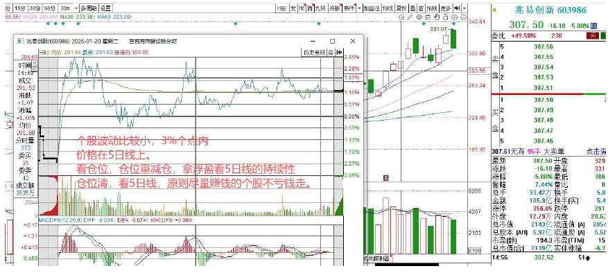
第二类：围绕箱体下沿
放量跌破，注意风险！要大跌！
如果第一卖点没有卖，可以转为找第二卖点， 但前提一定是轻仓的，如果是重仓，第一类卖点错过，如果等到第二类卖点再卖，亏损也会较大。所以重仓即使错过了第一类卖点，尽量也要考虑减仓。
第三类：反弹站不上箱体下沿或碰一下又跌
这是二次确认要跌，逃命卖点
小白补充必看！
在箱体下沿低吸的票，股价可能会在这个位置晃悠一阵，接受这种小波动，别一跌就慌，卖点看“箱体反弹没按预期涨” 就行；任何方法都有“骗线”（股价故意走假形态骗你买卖），可以看收盘价格或次日开盘30 分钟价格判断，不用纠结，总要接受偶尔被骗；做不到“卖点果断”，就别买波动大的票，或者少买点（低仓位），别硬扛。
一字板回流
主要矛盾：不是技术形态上，而是强势板块，分歧活口博弈回流
强势板块，保证不会一日游；分歧活口，通过板块的分歧，个股的强势，来识别个股的辨识度。
至于这个活口，是一字板，还是t字板，还是换手板，还是趋势股，上影线，其实都只是形态。核心的逻辑是：强势板块没有结束，技术形态识别个股辨识度的一种方法。还有啊，基本面核心，趋势股等等，其实逻辑都是一样的。具体的技术形态，比如一个板，两个板，t字板，t字板次日的分时，不是逻辑，而是自爱逻辑下尽量找更理想的介入点。比如一个一字板，比两个一字板更容易涨停。比如开板当天分歧的力度很大，次日可能会有惯性下杀，那么可能会有更低的买点。再比如，如果板块比较强，分歧次日，可能高开秒板，没有下杀的过程。
核心的逻辑就是板块强势，不会直接结束，越强的板块，分歧的越早，越容易回流，性价比越高。大爆发，分歧早，说明还有分歧，更容易在分歧中上涨。
两个一字，可能会透支空间了。但只要不是连续一字板到顶，还是有机会，但要注意分时承接。
阅读大港和国光股票的文章
还讲过龙头平开的低吸模式：就是说一个板块，如果当天大涨，第二天龙头股平开，也可以直接买。逻辑就是大涨次日，会有惯性，平开就是一种分歧，后面会有拉升。
龙回头
龙回头指的是龙头妖股的后期买点。存在两种龙回头：
- 上升阶段只调整一两根大阴线至十日线附近或者高位横盘调整至十日线附近就开始反抽或者二波；
- 波段后回调好多天后的二波或者小周期波段。
第一种
大部分都走不出二波，走出的概率很低，向上空间很小，向下空间巨大，盈亏比很低，尤其是第一波涨幅已经很大的纯投机票。真正能走二波的龙头，一般在第二波首板也是主动领涨，或者先于市场反弹，先止跌先新高。
第二种
四个条件缺一不稳！
龙头妖股在一波波段之后，开始出现连续阴线回调，做超跌。一般是距离最高点下跌30%多后，rsi低于30，重新站上10日线，macd中出现或者将要出现时博弈金叉，且短线靠近0轴（金叉可能出现在很多地方，但是0轴附近的金叉很有含金量），0轴上或者0轴下的金叉一般都不要关注
买卖点依据
卖点依据
一个就是按照技术面卖，一个就是按照板块周期卖。
- 按技术卖：出现明显的走弱信号，止盈止损；或者缩量拉升，分批卖出。
- 按周期卖：第一天爆发，第二天分歧，我会做t或者持有等回流看强弱再卖，好处是不太会卖飞，坏处是可能过山车。
买点依据
指数阳线，做高度股低吸或者打板。
如果是主流龙头，打板确定性会更高。分支龙头，低吸会更好一点。因为资金早盘会做主流板块，很多资金踏空了，才会去选择分支龙头。
主要是看板块指数，如果板块一直小涨，还没有大涨过，板块内出现的首板就可以关注一下，等出现二板就可以做。高度股最好在板块爆发日前入手，爆发日入手有可能次日板块分歧导致不及预期。
强为弱之纲
原理
一种比价效应，龙头的强势上涨会带动板块上涨，资本逐利，哪里有钱赚就去哪里。
跟风和补涨的区别：跟风是龙头主升过程中跟随龙头上涨；补涨是龙头逐渐走弱，开始震荡后，补涨股能够你板块、逆龙头上涨。
介入方式
- 盘中做跟风，赌盘中涨停。盘中龙头快速上涨，做跟风尽量不要超过5个点，考虑到盈亏比。做跟风尽量不要做中位股，比如龙头3板，去做2板的就不太好。如果去打板跟风股涨停，只做板块内当天第一个首板涨停最稳妥；日内跟风，一般都要在拉升后的调整之后做低吸，均线附近，博弈日内涨停，如果冲板失败，第二天可以保本走。
- 尾盘做跟风，赌次日拉升。尽量不要买当天中阳线，最好买小阳、小阴。中阳线代表个股的弹性和波动已经放大，这种性价比会降低，如果向下，调整也会大于小阳、小阴的个股。（买低弹性，博弈弹性放大的超额收益）
- 趋势线结构。小阳线拉升，没有明显加速过，接近新高位置，很容易出现大阳线加速走势。
案例1：
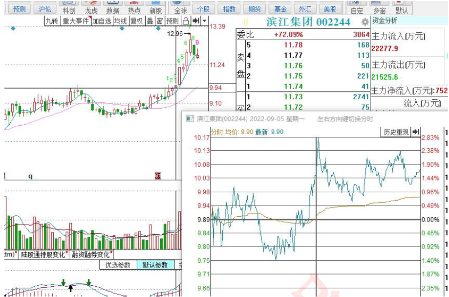
圈友亏钱的个股。9月5日分歧日没买，9月6日龙头加速了，去买中位股。龙头没买到，去买中位股。龙头才3板，买2板的预期在哪里。所以这个不应该买。中位股弹性大，上面有龙头，性价比又低，容易亏钱。买弹性小的，即使不涨，也比中位股回落亏钱强。坚决不要不高不低。
案例2：
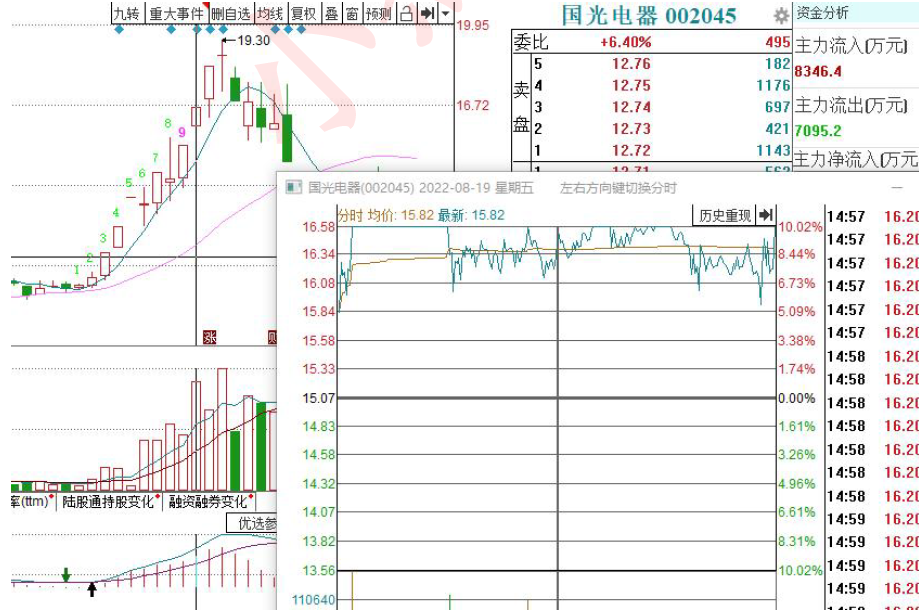
消费电子大分歧，有回流预期，没有走弱，龙头国光也在换手。在龙头分歧的时候，盘中买肯定就不好了，不如尾盘买。因为盘中买，容易遇到回落，但是尾盘买，可以回避回落，成本降低。
漫步者N字形态。风股止盈次日消费电子回流，漫步者是率先上板的首板个股，多拿一会，次日分歧，跟风股止盈
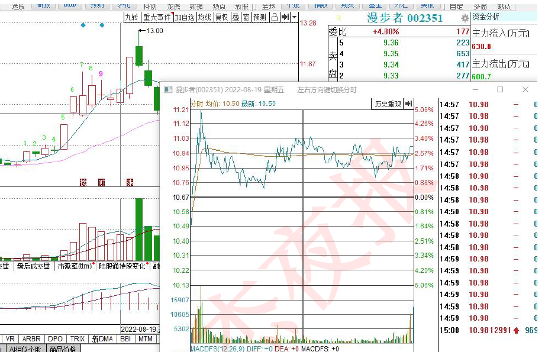
总结
选跟风就是股性和性价比，不要买高，买高不如做龙头。
筹码错位
原理
- 人气股高位涨停被闷杀，大量套牢现金。高位缩量跌停前的最后一根k线，最好是涨停，或者是大阳线，不能是阴线，阴线说明有换手有获利资金兑现。
- 连续跌停，一般是两个跌停，第一个跌停不放量，在第二个跌停打开的时候高位被套牢的筹码在低位跌停打开时进行筹码换手，形成错位。
- 跌停打开时，瞬间放大量，量越大越好。量越大说明上方的套牢盘止损越多，那么在盘中的拉升过程中抛压就越小。
撬跌停板的模式
套利买点之大涨日低吸人气股
原理逻辑
做轮动预期，在牛市和震荡市比较好用，利用情绪的轮动规律。
借指数的东风，去找相对低位的洼地板块进行套利。指数和主流板块的强度保证成功率
条件
- 大涨日：大盘大涨日各板块基本都会水涨船高。
- 人气股：非主流板块额龙头，前期活跃的人气股。
大涨日往往最强板块的龙头早就涨停，追最强板块的后排如果没选到股性好的会遇到冲高回落的情况，小白经常吃这个亏。资金就像水，会找最近活跃度较高的，强度逻辑不错的，前期人气股。具有较高的群众基础，一点火立马就会有人来追涨。
步骤
- 识别大涨日
一般出现在冰点后1-2个交易日，或者上一个小周期后的2-3天，关键是涨跌家数和指数量能，涨幅
- 寻找次强板块，前期活跃板块，妖股
- 次强指当日涨幅排名前五，宽一点可以到前10，板块内有涨停，板块处于上升趋势或者前高附近是加分项；
- 前期活跃指的是最近某天市场的最强板块，时间越近越好，当下最强的或者曾经最强的，尝试过成为龙头的股票，市值大成交额大的中军个股才是目标；
- 前一个月左右大涨的人气妖股，调整充分了到5/10日线，调整了20-30个点，形成止跌信号，下影线，多方炮等见底组合。
- 买入时机
一般确认了大涨当天的10.30或者14.30，指数没有回落风险。次日也可以做，但是丧失先手权。
一般选择回调的低点，分时均线附近低吸。好的指数强度或者高涨的情绪，打板也可以。
- 卖出和止损
- 卖出：一般持股1-2天，理想的是，当日尾盘拉升，次日冲高跑路；当日没涨，次日大涨，涨不动了回落分时均线跑路。
- 止损：-5、-8左右严格止损；买入后1-3个交易日没起色就跑。
优缺点、难点
- 优点：可以尾盘或盘中交易，不需要追涨和打板的盯盘，确认指数强势后操作，避免了冲高回落的风险
- 缺点：板块多的时候，确定性下降，成功率下降，不如打板、追涨最强板块确定性高
- 难点：熟悉轮动板块，熟悉人气股